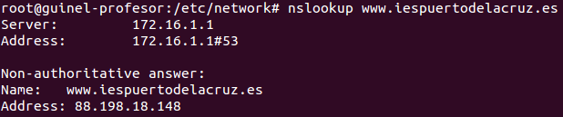
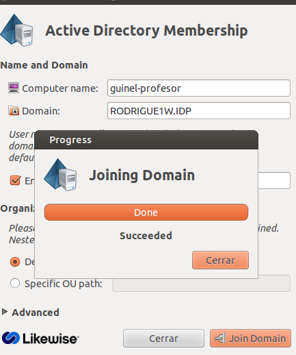
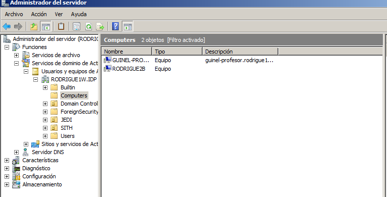
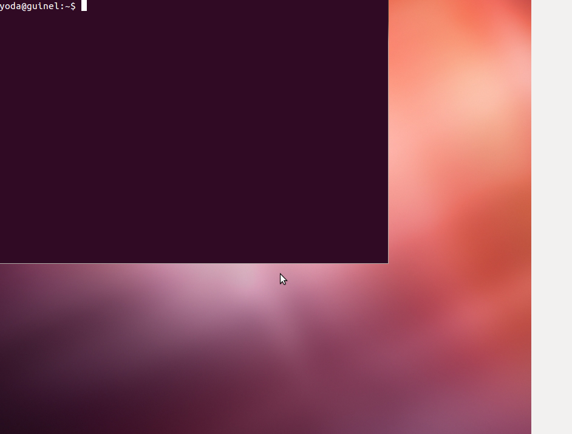

- Módulo: Sistemas Operativos
- Título del trabajo Clientes de Dominio.
- Componentes del grupo: Güinel Rodríguez García.
- Curso Académico: 2013/2014
- Fecha de entrega: 28 de mayo de 2014
-Vamos a utilizar un ubuntu para la práctica.
-Configuramos los parámetros establecidos por el profesor, y lo comprobamos con:
-Para poder unirse al PDC de windows debemos descargarnos una aplicación llamada Likewise.
-Para ejecutar el programa, abrimos un terminal y ponemos: domainjoin-gui.
-Para saber si nos hemos conectado al dominio, entramos en windows y lo comprobamos.
-Desde el cliente, entramos al sistema con algún usuario del dominio.
